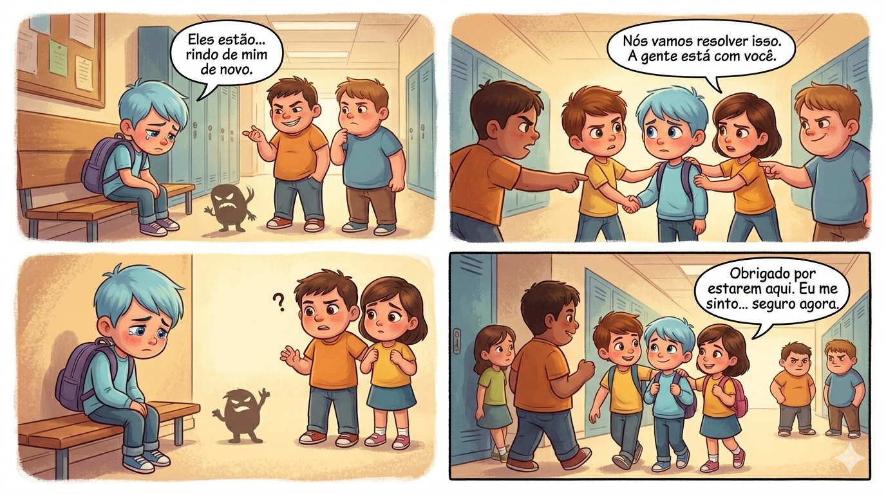

Segundo a psicóloga Tânia Paias, bullying é todo ato intencional e continuado que pretende humilhar e intimidar colegas, criando um desequilíbrio de poder. A culpa nunca é da vítima.
SE VOCÊ SOFRE
Não se isole nem se culpe.
Falar é o primeiro passo.
Procure um adulto hoje.
SE VOCÊ VÊ
Não ria nem incentive.
Inclua o colega no grupo.
Denunciar é proteger.
SE VOCÊ É PAI/MÃE
Escute com total empatia.
Observe sinais de tristeza.
Fale com a escola já.

As Marcas Invisíveis
Muitos alunos não denunciam por medo de retaliação ou exposição. "Prefiro continuar a ser vítima do que todos saberem", dizem alguns. Esse peso acaba se tornando físico e emocional.